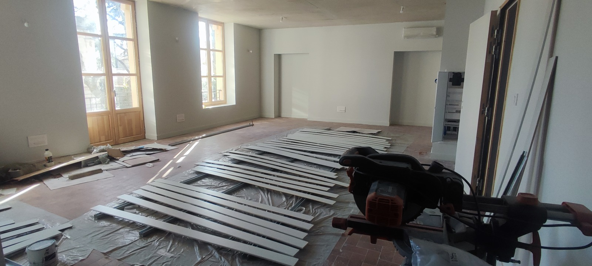
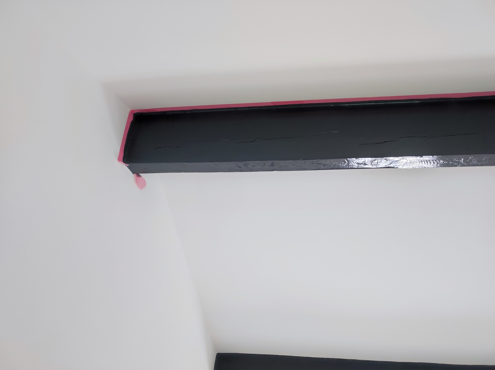
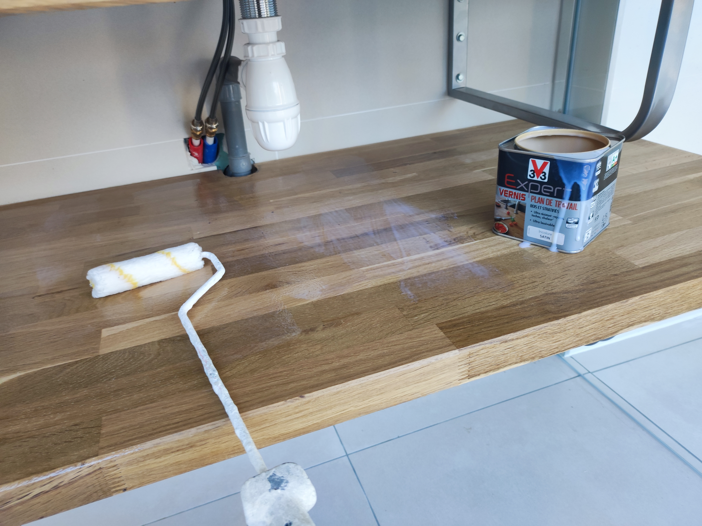
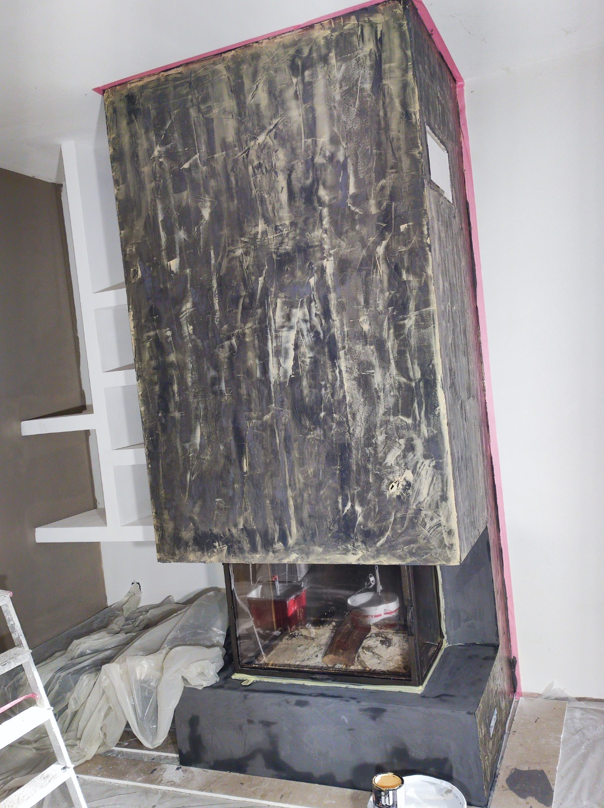

Sublimez vos intérieurs avec des effets matière authentiques
Au-delà d’une peinture unie classique, la peinture décorative apporte du relief, de la profondeur et une signature architecturale à votre salon, votre chambre parentale, votre entrée ou votre local commercial.
À Montpellier, Nîmes et Béziers, Peinture créa & finition maîtrise l’application manuelle des enduits décoratifs, des peintures à la chaux et des effets texturés pour créer des murs vivants qui captent la lumière naturelle tout au long de la journée.
Choix de la texture et de la nuance selon l’orientation de votre pièce et votre mobilier.
Ratissage et impression régulatrice indispensables pour recevoir un enduit décoratif sans défaut.
Travail au platoir inox, à la brosse à badigeon ou à l’éponge pour des nuances uniques et naturelles.
Application éventuelle de cire ou vernis mat protecteur pour rendre l’enduit résistant aux taches.



Nos réalisations en peinture décorative









Nos techniques de peinture décorative
- Peinture et badigeon à la chaux naturelle : rendu minéral mat et nuancé, respirant et intemporel.
- Tadelakt et marmorino : enduits à la chaux ferrés à l’aspect doux, profond et légèrement lustré.
- Stuc décoratif et stuc vénitien : effet marbré raffiné idéal pour les séjours, cheminées et halls d’accueil.
- Effets sablés, veloutés ou métallisés : reflets subtils sur un mur d’accent ou une tête de lit.
- Effets pierre, bois ou minéral brut : personnalisation de commerces, restaurants, bureaux et villas.
Où placer un mur décoratif pour un rendu réussi ?
Pour conserver de l’élégance et ne pas surcharger l’espace, nous conseillons souvent de traiter un ou deux murs stratégiques en peinture décorative (mur derrière le canapé, tête de lit, couloir d’entrée, coffrage de cheminée) et de les associer à des murs adjacents en peinture mate ou velours sobre.
La lumière rasante d’une baie vitrée ou d’un ruban LED met particulièrement en valeur le relief d’un enduit à la chaux ou d’un effet sablé.
Validation sur mesure : Avant de démarrer un grand mur décoratif, nous validons avec vous la teinte exacte, l’intensité de l’effet et le niveau de brillance souhaité.
Questions fréquentes
La peinture à la chaux ou les enduits décoratifs sont-ils fragiles ?
Protégés par un savon noir ou un vernis mat adapté, nos enduits décoratifs résistent très bien à la vie quotidienne et restent faciles d’entretien.
Peut-on appliquer une peinture décorative sur du placo BA13 ?
Oui, après réalisation soignée des bandes à joints, ponçage et application d’une sous-couche d’impression adaptée aux enduits décoratifs.
Réalisez-vous aussi des effets décoratifs pour des commerces ou bureaux ?
Oui, nous intervenons régulièrement dans des boutiques, salons, restaurants et bureaux sur Montpellier pour créer une identité visuelle forte.